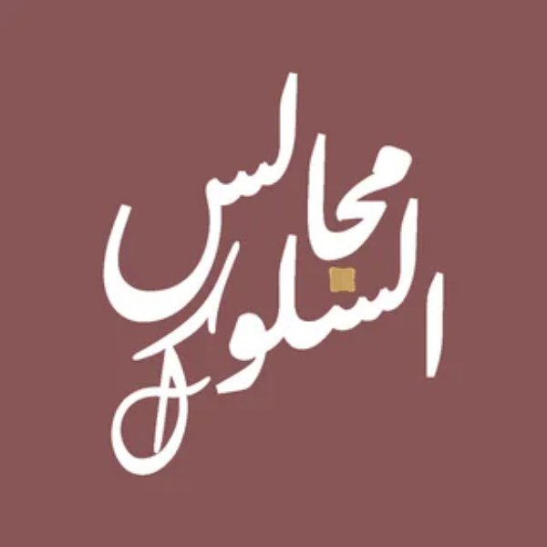

من برامج مسار عروج
مجلس قرائي أسبوعي في كتب التزكية والسلوك، يُعقد الاثنين ٩م بتوقيت مكة عبر قناة عروج على التليجرام.
هذا المجلس متوقف حاليًا
يُبث المجلس عبر قناة عروج على التليجرام:
قُرئ في هذا البرنامج 2 كتابًا، وهي مثبتة في مكتبة صفوة: